Business Context
A lot of people in the world share a common desire: to own a vehicle. A car or an automobile is seen as an object that gives the freedom of mobility. Many now prefer pre-owned vehicles because they come at an affordable cost, but at the same time, they are also concerned about whether the after-sales service provided by the resale vendors is as good as the care you may get from the actual manufacturers.
New-Wheels, a vehicle resale company, has launched an app with an end-to-end service from listing the vehicle on the platform to shipping it to the customer's location. This app also captures the overall after-sales feedback given by the customer.
Objective
New-Wheels sales have been dipping steadily in the past year, and due to the critical customer feedback and ratings online, there has been a drop in new customers every quarter, which is concerning to the business. The CEO of the company now wants a quarterly report with all the key metrics sent to him so he can assess the health of the business and make the necessary decisions.
As a data analyst, you see that there is an array of questions that are being asked at the leadership level that need to be answered using data. Import the dump file that contains various tables that are present in the database. Use the data to answer the questions posed and create a quarterly business report for the CEO.
Solution Query:
<Write your SQL query here>
Example:-
select *
from online_customer
where CUSTOMER_GENDER = ‘F’;Output:
<Attach the screenshot of your output table>
The screenshot should display 5-10 rows of the output
Make sure the screenshot contains the “SQL Query Passed” along with the output table.
A sample screenshot is provided below.
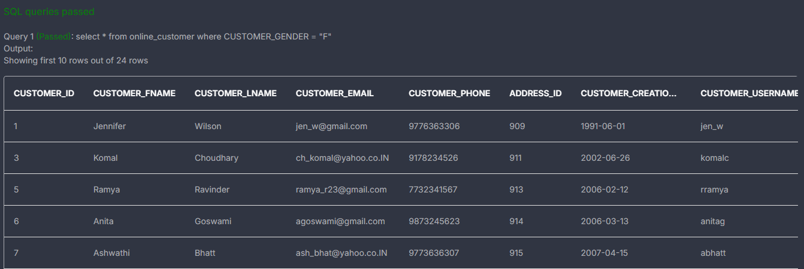
Observations and Insights:
-- Hint: For each state, count the number of customers
Solution Query:
SELECT
COUNT(DISTINCT c.customer_id) AS total_customers
FROM customer_t c
JOIN order_t o
ON c.customer_id = o.customer_id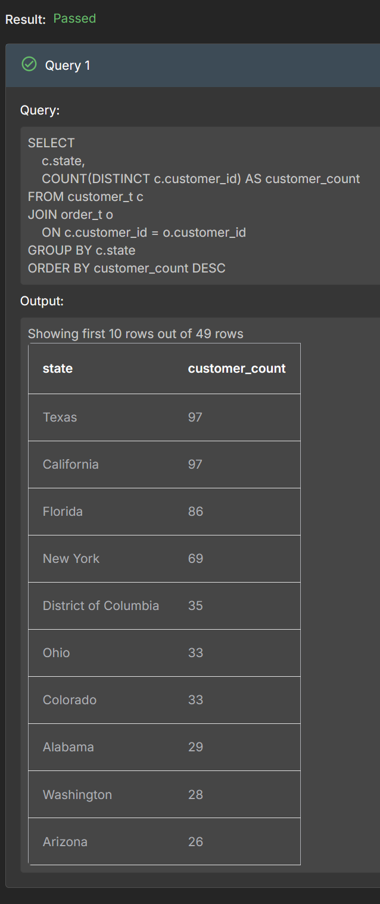
Observations and Insights:
Top markets: Texas and California are the strongest states by customer count .
Secondary markets: Florida and New York also have high engagement, so they are likely important sales regions .
Long tail: After the top few states, counts drop off, which means customer distribution is broad but uneven
-- Hint: For each vehicle make what is the count of the customers.
Solution Query:
SELECT
p.vehicle_maker,
COUNT(DISTINCT o.customer_id) AS customer_count
FROM order_t o
JOIN product_t p
ON o.product_id = p.product_id
GROUP BY p.vehicle_maker
ORDER BY customer_count DESC
LIMIT 5;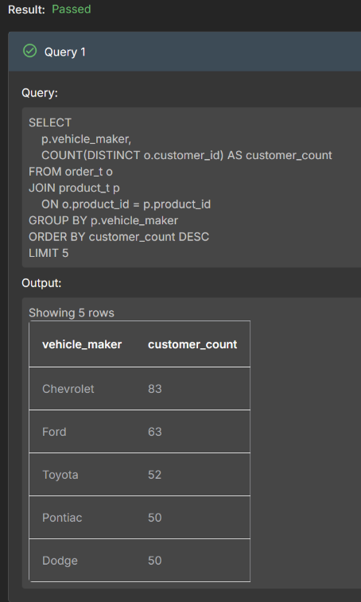
Observations and Insights:
Chevrolet and Ford are tied for first, so customer preference is split evenly at the top.
Toyota is a strong third, but there is a noticeable drop from the top two brands to the rest.
Pontiac and Dodge are tied, showing another evenly matched pair in the top five.
-- Hint: Use the window function RANK() to rank based on the count of customers for each state and vehicle maker.
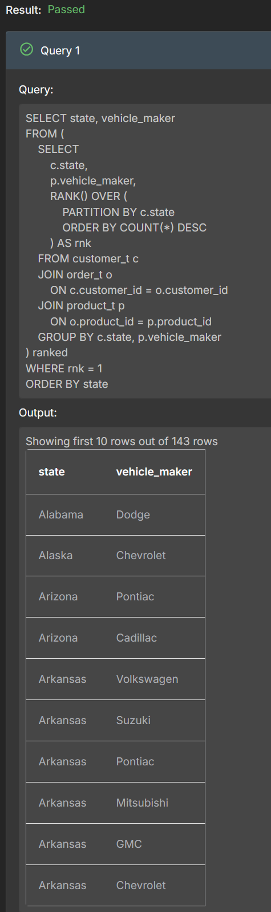
-- After ranking, take the vehicle maker whose rank is 1.Solution Query:
SELECT state, vehicle_maker
FROM (
SELECT
c.state,
p.vehicle_maker,
RANK() OVER (
PARTITION BY c.state
ORDER BY COUNT(*) DESC
) AS rnk
FROM customer_t c
JOIN order_t o
ON c.customer_id = o.customer_id
JOIN product_t p
ON o.product_id = p.product_id
GROUP BY c.state, p.vehicle_maker) ranked
WHERE rnk = 1
ORDER BY state
Observations and Insights:
Different states have different “most preferred” makers, which means customer brand preference varies geographically.
Some states show ties for rank 1, so more than one vehicle maker can be equally preferred in the same state when customer counts match.
The result is useful for regional inventory planning, since it shows which makers should be prioritized by state.
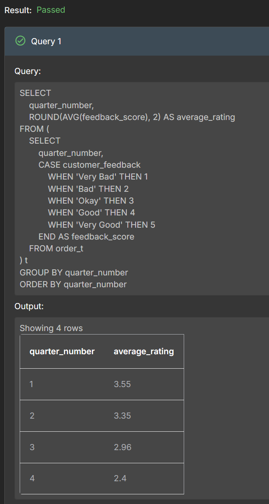
Question 4: Find the overall average rating given by the customers. What is the average rating in each quarter?-- Hint: Use subquery and assign numerical values to feedback categories using a CASE statement.
-- Then, calculate the average feedback count per quarter. Use a subquery to convert feedback
-- into numerical values and group by quarter_number to compute the average.
Solution Query:
SELECT
quarter_number,
ROUND(AVG(feedback_score), 2) AS average_rating
FROM (
SELECT
quarter_number,
CASE customer_feedback
WHEN 'Very Bad' THEN 1
WHEN 'Bad' THEN 2
WHEN 'Okay' THEN 3
WHEN 'Good' THEN 4
WHEN 'Very Good' THEN 5
END AS feedback_score
FROM order_t) t
GROUP BY quarter_number
ORDER BY quarter_number;
Observations and Insights:
The average rating declines steadily across the year, from 3.55 in Q1 to 2.40 in Q4, showing a clear downward trend in customer satisfaction.
Q1 and Q2 have the strongest feedback, both above 3.3, which suggests the business started the year with relatively positive customer experiences.
The sharp drop in Q3 and especially Q4 suggests service, product quality, or delivery issues may have worsened later in the year.
-- Hint: Calculate the percentage of each feedback type by using conditional aggregation.
-- For each feedback category, use a CASE statement to count the occurrences and then divide by the total count of feedback for the quarter, multiplied by 100 to get the percentage.
-- Finally, group by quarter_number and order the results to reflect the correct sequence.
Solution Query:
SELECT
quarter_number,
ROUND(100.0 * SUM(CASE WHEN customer_feedback = 'Very Good' THEN 1 ELSE 0 END) / COUNT(*), 2) AS very_good_pct,
ROUND(100.0 * SUM(CASE WHEN customer_feedback = 'Good' THEN 1 ELSE 0 END) / COUNT(*), 2) AS good_pct,
ROUND(100.0 * SUM(CASE WHEN customer_feedback = 'Okay' THEN 1 ELSE 0 END) / COUNT(*), 2) AS okay_pct,
ROUND(100.0 * SUM(CASE WHEN customer_feedback = 'Bad' THEN 1 ELSE 0 END) / COUNT(*), 2) AS bad_pct,
ROUND(100.0 * SUM(CASE WHEN customer_feedback = 'Very Bad' THEN 1 ELSE 0 END) / COUNT(*), 2) AS very_bad_pct
FROM order_t
GROUP BY quarter_number
ORDER BY quarter_number;
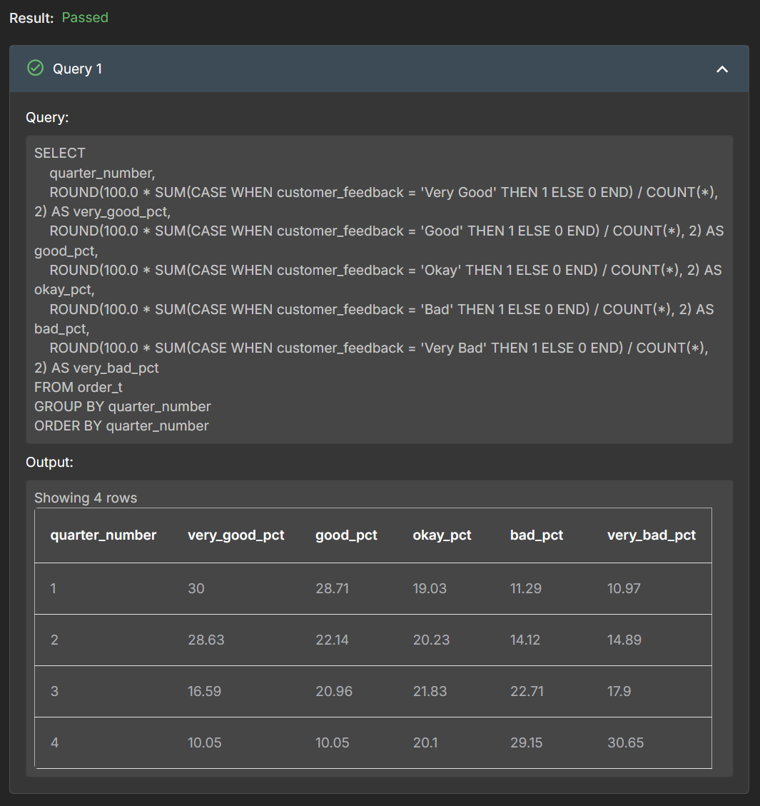
Observations and Insights:
The feedback mix shifts over time: “Very Good” and “Good” decline, while “Bad” and “Very Bad” increase, especially by Q4.
In Q1, positive feedback still dominates, but by Q4 the negative categories are clearly larger than the positive ones.
This shows customers are getting more dissatisfied over time, with the strongest warning sign appearing in the last quarter.
-- Hint: Count the number of orders for each quarter.
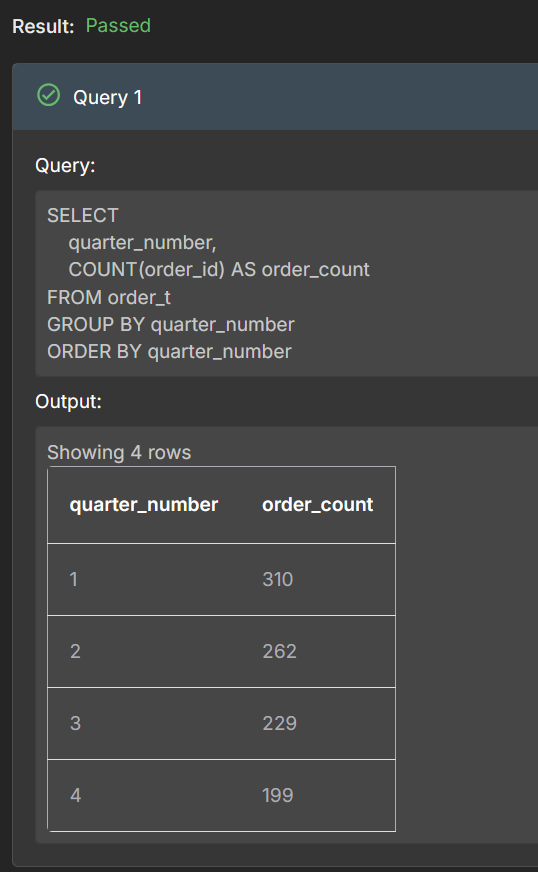
Solution Query:SELECT
quarter_number,
COUNT(order_id) AS order_count
FROM order_t
GROUP BY quarter_number
ORDER BY quarter_number;Observations and Insights:
-- Hint: Net Revenue is the amount obtained by multiplying the number of units sold by the price after deducting the discounts applied.
-- Quarter over Quarter percentage change in revenue means what is the change in revenue from the subsequent quarter to the previous quarter in percentage.
-- Calculate the revenue for each quarter by summing the quantity of product and the discounted vehicle price. Use the LAG function to get the revenue from the previous quarter, and then compute the quarter-over-quarter percentage change based on the current and previous revenue values.
-- Ensure the results are ordered by quarter_number to maintain the correct sequence.
Solution Query:
SELECT
quarter_number,
total_revenue,
ROUND(
100.0 * (total_revenue - prev_revenue) / prev_revenue,
2
) AS qoq_pct_change
FROM (
SELECT
quarter_number,
SUM(quantity * (vehicle_price - ((discount / 100) * vehicle_price))) AS total_revenue,
LAG(SUM(quantity * (vehicle_price - ((discount / 100) * vehicle_price)))) OVER (
ORDER BY quarter_number
) AS prev_revenue
FROM order_t
GROUP BY quarter_number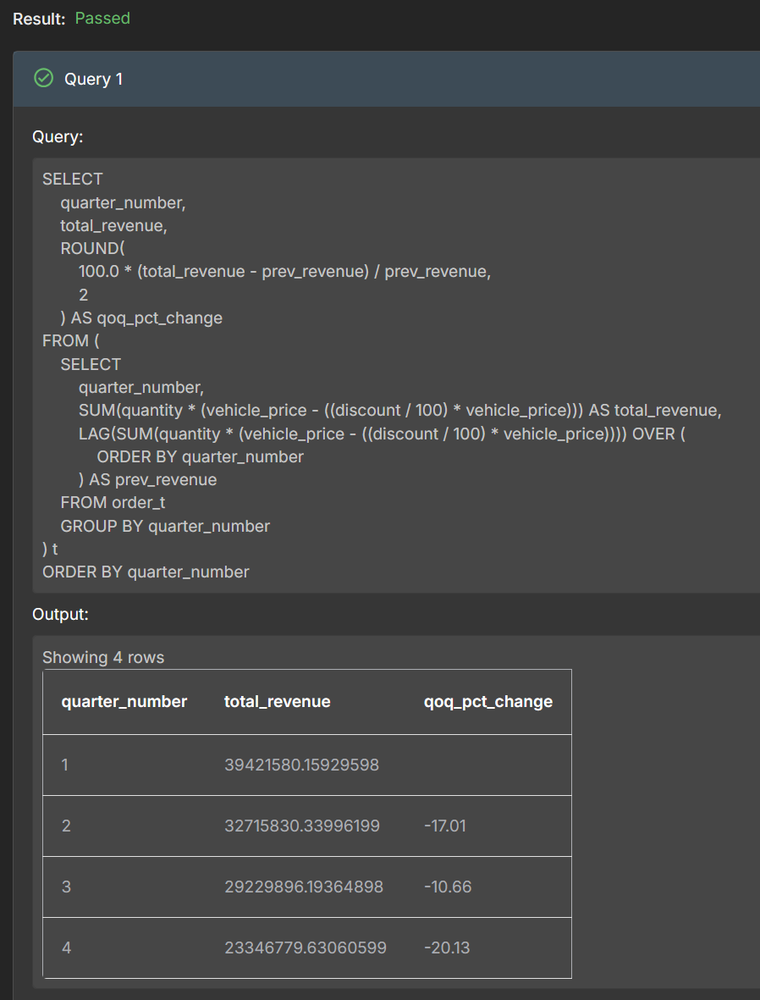
) t
ORDER BY quarter_number;
Observations and Insights:
Q1 has the highest revenue and serves as the baseline for the year.
Q2 drops by about 17.01% from Q1, which is the steepest drop in the series.
Q4 is the weakest quarter, with revenue down about 20.13% from Q3.
-- Hint: Find out the sum of net revenue and count the number of orders for each quarter.
Solution Query:
SELECT
quarter_number,
SUM(quantity * (vehicle_price - ((discount / 100) * vehicle_price))) AS total_revenue,
COUNT(order_id) AS total_orders
FROM order_t
GROUP BY quarter_numberORDER BY quarter_number;
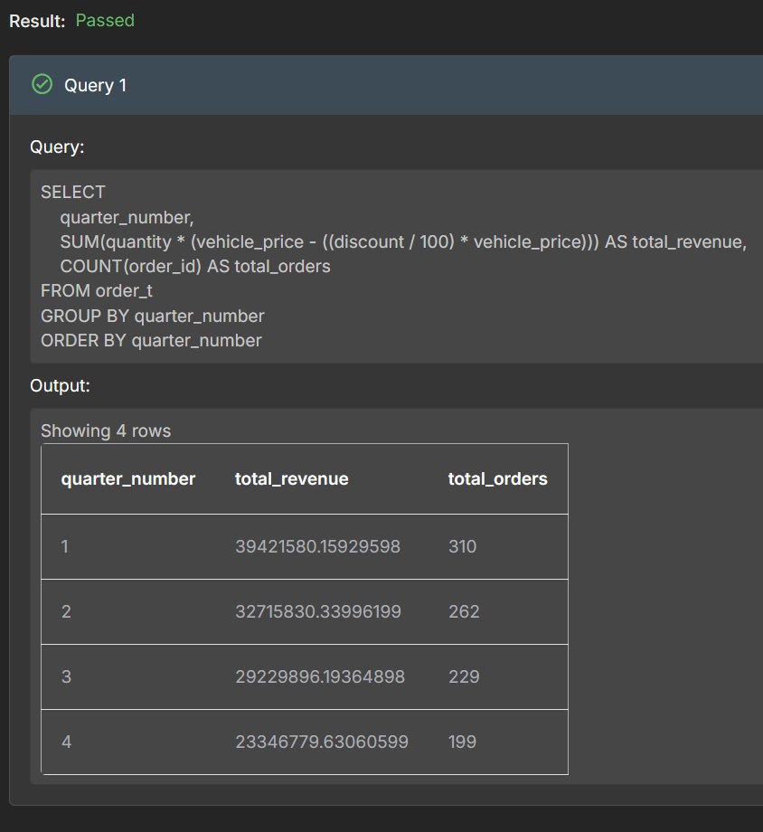
Observations and Insights:
-- Hint: Find out the average of discount for each credit card type.
Solution Query:
SELECT c.credit_card_type,
ROUND(AVG(o.discount), 2) AS average_discount
FROM order_t o
JOIN customer_t c
ON o.customer_id = c.customer_id
GROUP BY c.credit_card_type
ORDER BY c.credit_card_type;Note: The ‘discount’ field in the ‘order_t’ table is stored as a percentage, i.e. 0.6 represents a discount of 0.6%, not 60%.
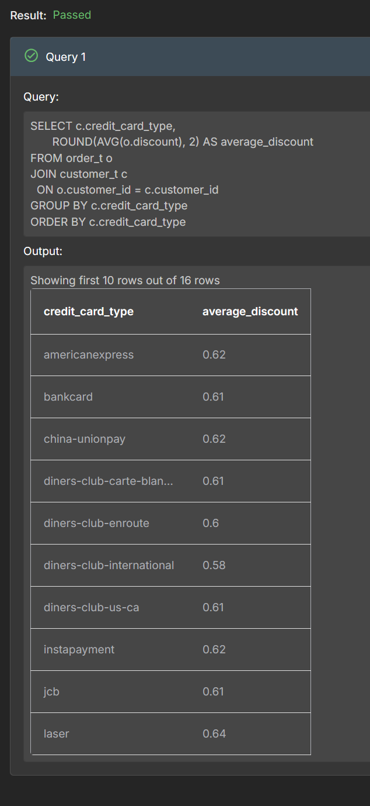
Observations and Insights:
The average discount is very similar across most credit card types, so no single card type appears to dominate discount usage by a large margin.
Some credit card types have slightly higher average discounts than others, which may suggest targeted promotional offers or customer spending patterns.
The differences are small, so discount policy seems fairly consistent across card types overall.
-- Hint: Please use the julianday function instead of the DATEDIFF function to find the difference between the ship date and the order date.
-- The SQL Playground Editor is built on the SQLite platform, which doesn’t support the DATEDIFF function available in MySQL
Solution Query:
SELECT quarter_number,
ROUND(AVG(julianday(ship_date) - julianday(order_date)), 2) AS avg_shipping_days
FROM order_t
GROUP BY quarter_number
ORDER BY quarter_number;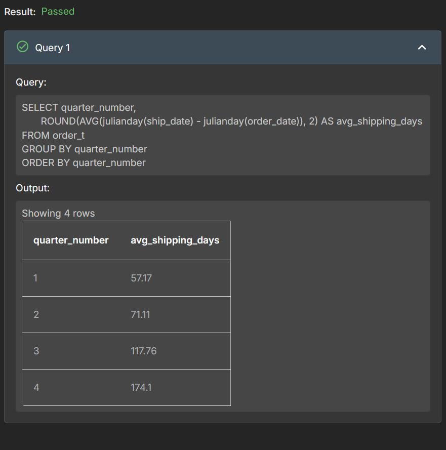
Observations and Insights:Shipping time may vary by quarter, which can reflect seasonal demand, warehouse load, or logistics delays.
If one quarter has a noticeably higher average shipping time, it suggests operations were slower during that period.
Consistently low shipping times would indicate efficient fulfillment, while rising times across quarters could point to a growing delivery bottleneck.
| Total Revenue | Total Orders | Total Customers | Average Rating |
|---|---|---|---|
| $39,421,580.15 | 1000 | 994 | 3.14 |
| Last Quarter Revenue | Last quarter Orders | Average Days to Ship | % Good Feedback |
| $23,346,779.63 | 199 | 97.96 | 21.5% |
Note: These values must be derived using SQL queries. Some of them may have already been obtained while answering previous questions.